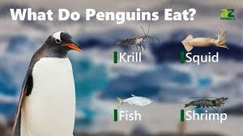
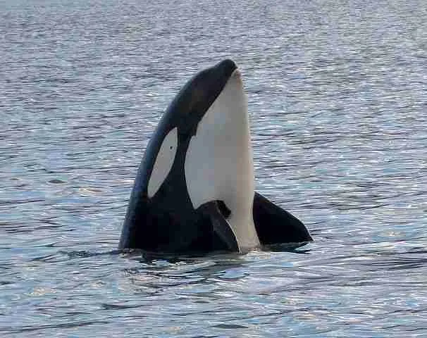

Predators And Prey
Penguins primarily feed on fish, krill, and squid, which they catch while swimming underwater. Their streamlined bodies and powerful flippers make them efficient hunters, allowing them to dive deep and change direction quickly as they pursue prey. Different species rely on different food sources depending on their habitat, with some feeding mostly on krill and others focusing more on small fish or squid.

Penguins face several natural predators, especially in the ocean. Leopard seals, orcas (killer whales), and sea lions often hunt penguins as they travel to and from their feeding grounds. Leopard seals are particularly skilled at ambushing penguins near the water’s edge, while orcas may target them opportunistically. On land, penguin eggs and chicks are vulnerable to predation by birds such as skuas and giant petrels, which frequently raid unprotected nests.
To survive these threats, penguins have developed a range of adaptations. Their agility in the water helps them evade marine predators, and many species nest in large colonies to increase safety through sheer numbers. Some penguins nest in burrows or sheltered areas to better protect their eggs and chicks from aerial predators.

Human activities also pose significant challenges for penguin populations. Overfishing can reduce the availability of key prey species, while habitat destruction and climate change alter breeding grounds and impact food supply. In response, conservation efforts are underway worldwide, including establishing protected marine areas, promoting sustainable fishing practices, and monitoring penguin populations to better understand how to support their long-term survival.